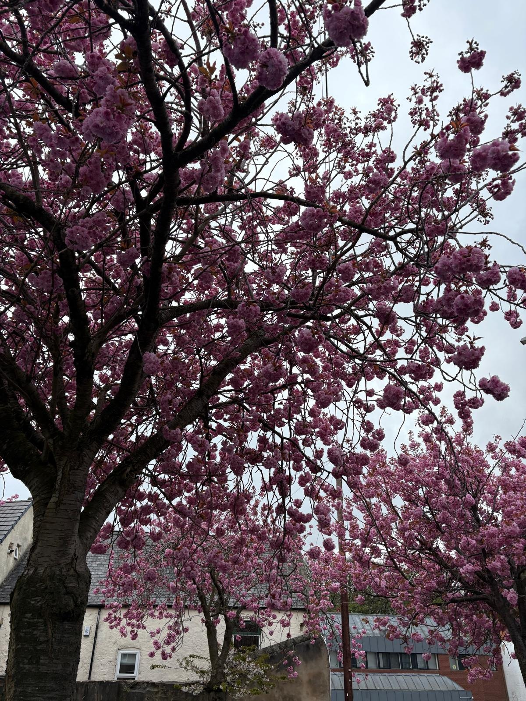

Houghton-le-Spring: Begin with a wellness system check-in. Focus on breath, body, and stillness. No destination urgency. Anchor your mindset; the trail doesn't need to rush before growth. The direction you take, either North, South, East or West, all will bring unique experiences on your personal journey!
Washington or Durham: It's your choice! Move toward expansive views. Blossom here is open and wide. Reflect on your 'capacity' to grow and create space to integrate everything.
Angel of the North or wave watching at Seaham: You choose. Head along the fluid paths. Allow movement + reflection. Blossom reflects an emotional, fluid journey where you allow yourself to 'be' in the current.
Jesmond Dene or Castle Eden Dene: Enter the sanctuary where urban meets nature. Topic: 'Belonging without blending'. Balance your environment and find stillness in the heart of the city.
Northumberland or Saltburn: Travel toward the coast. Wide skies and sea air. Topic: 'Freedom to Be'. Use the wild coastal blossom to integrate the entire journey.
Growth doesn't require pressure. Wherever your starting point, the destination is your choice. A new landmark trail and a new community of belonging and choice.
Join the Oubaitori Collective, where space to blossom truly exists.